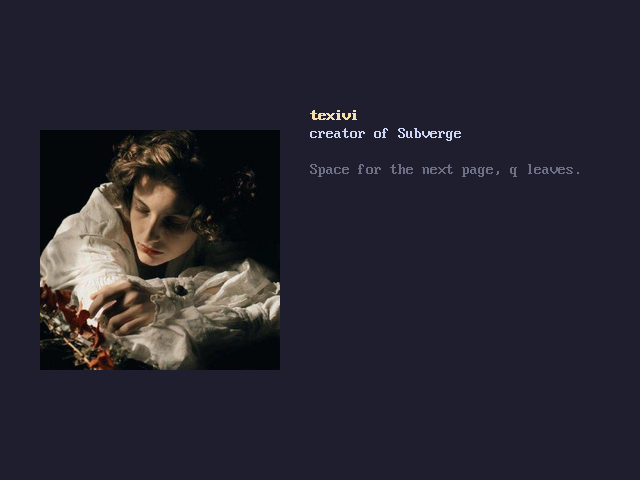
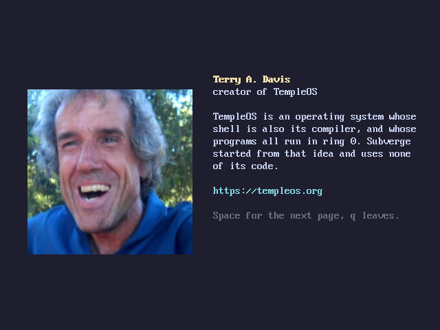
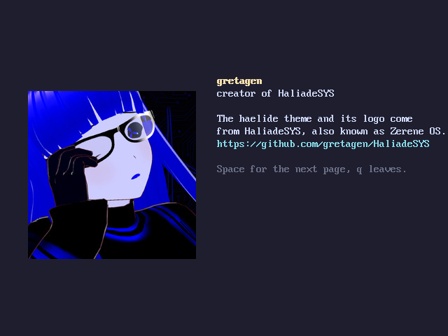
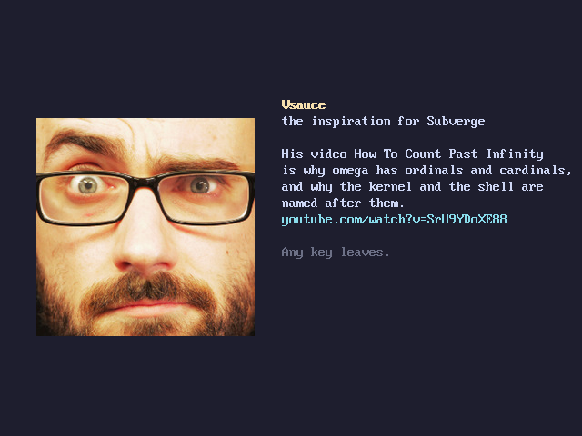

subverge
subvergeCredits
credits shows the people on four pages. Space goes to the next page.




texivi wrote Subverge.
Inspiration
The idea came from TempleOS, by Terry A. Davis. Its shell is also its compiler, its programs all run in ring 0, and it is small enough for one person to understand. Subverge uses none of its code. The site at templeos.org has the system and what Terry A. Davis wrote about it.
The infinite values in omega came from Vsauce's video How To Count Past Infinity. Ordinals and cardinals are values in the language because of it, and the kernel and the shell are named after them.
Other software
GRUB boots the ISO and is the only outside code that Subverge runs. It is built with gcc, binutils and nasm, and the ISO is made with grub-mkrescue and xorriso.
Fonts
The text is drawn with the 8 by 16 VGA font that the video card provides, with a few characters added by the kernel for ω, ℵ and subscript digits.
The haelide theme
The haelide theme and its logo are inspired by HaliadeSYS, made by gretagen: https://github.com/gretagen/HaliadeSYS. See themes and logos.
Pictures
credits shows the people on four pages with a picture for each: texivi, Terry A. Davis, gretagen and Vsauce. The built-in pictures are, with their licences:
| Picture | Made by | Licence |
|---|---|---|
misty-meadow |
Sergei Gussev | CC BY 4.0 |
mountain-lake |
Michal Klajban | CC BY-SA 4.0 |
golden-coast |
Inti Runa Viajero | CC BY 2.0 |
fjord-mist |
Tobias Tullius | CC0 |
tulip-rows |
Filio | CC0 |
dune-planet, dusk-ridge, phosphor-horizon |
generated by texivi | |
terry |
supplied by texivi |
The photographs come from Wikimedia Commons. They were scaled down to fit the screen. The screenshots in the gallery were taken from Subverge itself.
The name
Subverge is a made-up word from subvert and diverge. See history.
Licence
Subverge is released under the GPL v3.